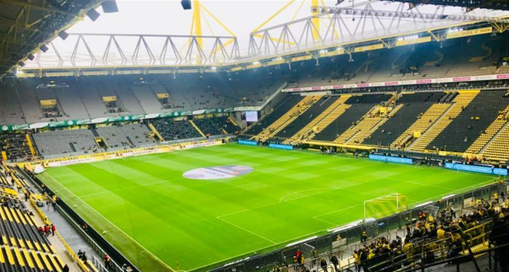

By David
A football ground is not a generic stadium with a pitch in the middle. Its screens live under three constraints that most venues do not have: the pitch-side boards sit low and close to play, the broadcast cameras are fixed and always looking at them, and the sponsorship content on those boards is governed by the competition. Together those constraints decide the specification more than the size of the crowd does.
This guide covers what a football ground asks of its LED displays, and where a club or venue should focus.
Three conditions separate a football installation from a general sports venue.
The pitch-side perimeter boards run along the touchline at low height, which puts them within reach of players, the ball and the assistant referee. The camera positions are fixed and close, with the main camera framing the pitch and the boards behind it for most of the match. And the sponsorship content on those boards rotates on a schedule set by the competition, not by the club.
Each of those is a hardware requirement in disguise: safety drives the board's structure, broadcast drives its refresh and surface, and sponsorship rotation drives how the boards are controlled together.
| Position | What it has to do |
|---|---|
| Pitch-side perimeter boards | Low profile, impact tolerant, broadcast clean, synchronised across the ground for sponsorship rotation |
| Big screen / scoreboard | Score, time, replays and crowd-facing content, read from the far stand |
| Tunnel and player areas | Warm-up and team content, close viewing, smaller pitch |
| Concourse and hospitality | Match feed, sponsor content and half-time messaging, seen at walking distance |
The perimeter boards are the ones that make a football project distinctive. They are also the ones most likely to be bought with the sponsorship contract in mind rather than the hardware in isolation, which is why the buyer and the specification are often decided together.
Boards at pitch level are in the path of players running out of play, and they are struck by the ball in every match.
That drives the mechanical design: a low profile that a player does not go over, a structure that absorbs impact rather than transferring it, and a front surface that does not shatter. Where the boards sit on a running track or a small setback, the distance from the touchline is itself a safety decision, and it is set with the venue and the competition rather than chosen freely.

The perimeter boards are on screen for the whole match, so they are judged by what the broadcast audience sees rather than by what the crowd in the stand sees.
That makes flicker-free performance and moire control non-negotiable, because banding on the boards shows up in every wide shot. It also means the boards have to hold their colour under stadium floodlight and across the range of exposures the broadcast uses, so that sponsor colours read correctly on air. The board's surface finish matters for the same reason: a reflective face catches floodlights and washes out the content behind it.
The content on perimeter boards is regulated by the competition, which sets what may appear, for how long, and in what rotation.
Those are rules the club and the competition enforce, not the manufacturer. What the manufacturer supplies is the capability to meet them: boards that can be driven as one system, switched between sponsors on a schedule, and held in sync across all four sides of the pitch so that a rotation does not break around the ground. Where a ground has boards from different suppliers, that synchronisation is the first thing to fail.
The buyer depends on the ownership model of the ground.
A club that owns its stadium buys the perimeter and the big screen itself. A stadium operator may own the installation and sell the board surface to sponsors as inventory. And a league or event organiser may bring temporary screens to a venue for a specific competition, in which case the equipment is rented and relocated rather than installed permanently.
Because the sponsorship value is often the business case, the screen is frequently specified with the sponsorship contract in mind. A supplier that understands that connection, rather than quoting panels in isolation, is easier for the club to work with.

For a football ground the technical file has to answer the broadcast and safety questions as well as the usual ones.
Refresh and moire data for the broadcast requirement, the impact and mounting detail for the pitch-side boards, brightness and dimming information for floodlit conditions, and the control architecture that allows synchronised rotation across the ground. Dimensioned drawings and the mounting interface follow for the ground works.
Our factory runs 8 IC production lines and 7 LED SMT production lines under ISO 9001:2015, with CE, FCC and RoHS certification, a 15 to 20 working day lead time and a three-year warranty. For pitch-side boards the usual match is the COB ZH series for a sealed, high-brightness, impact-tolerant face, with the D-PRO outdoor series for fixed stadium installations.
For the technical background on perimeter screens, see the stadium perimeter buying guide and the stadium broadcast guide.
Send your specifications for a detailed LED display price quote with UL/ETL certification.
Request Price Quote Chat on WhatsApp